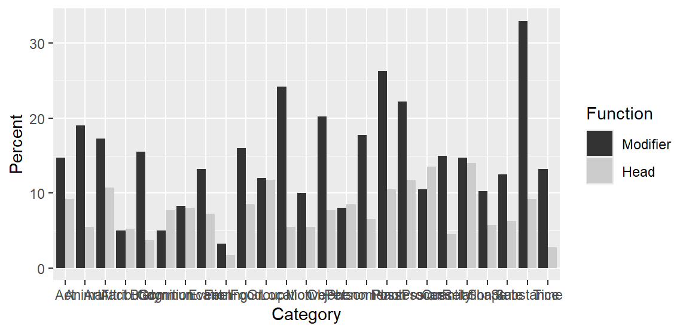
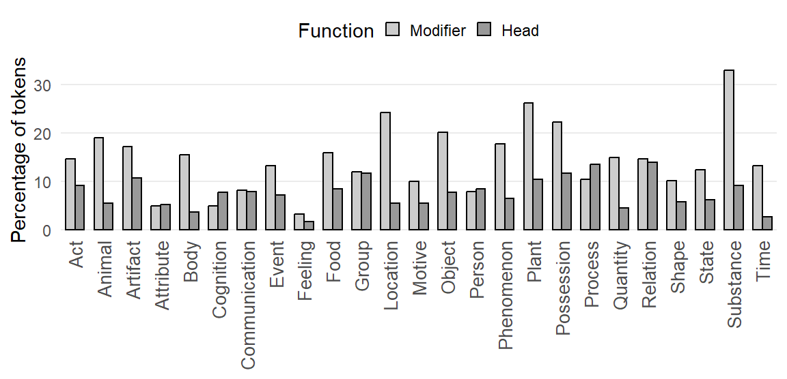
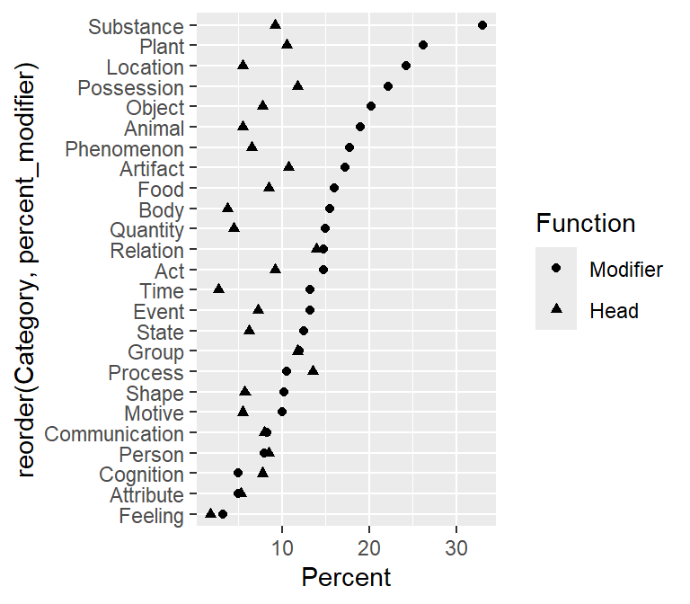
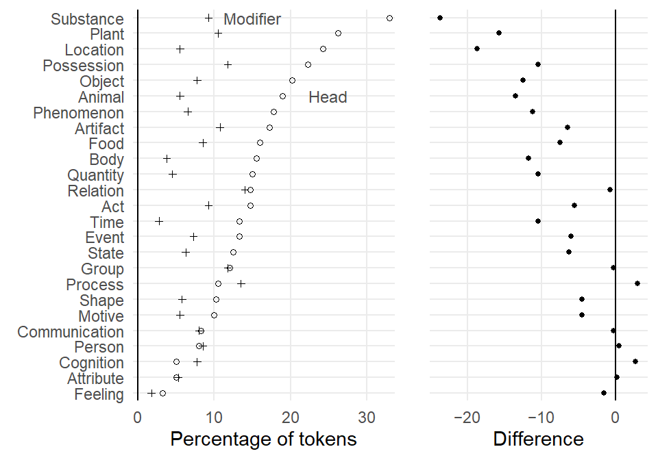

![]()
R setup
library(tidyverse){ggplot2} package .
The dot plot was introduced by Cleveland (1984) to address some of the shortcomings of bar charts. In Sönning (2016), I discuss and illustrate the potential of this graph type for language data analysis and presentation. In the course of writing that paper, I also created templates for Microsoft Excel, which make it easy to draw such graphs. They can be found here.
In a recent study, I looked at the use of bar charts in corpus-linguistic research articles. In this systematic review, I came across settings in which a grouped bar chart could have been fruitfully replaced by a grouped dot plot. In this blog post, I describe how to draw such a chart using the R package {ggplot2}.
library(tidyverse)For illustration, I will use data from Maguire, Wisniewski, and Storms (2010), a corpus study on semantic patterns in compounds consisting of two nominal constituents. These data are also the basis of Figure 5 and Figure 16 of the bar chart paper referenced above. The data include percentages for cross-classifications of two categorical variables:
Category: semantic category of the nominal constituent, n = 25 levelsFunction: function of the nominal constituent in the compound, n = 2 levels (“Modifier” vs. “Head”)The percentages, which are approximations taken from Figure 2 of Maguire, Wisniewski, and Storms (2010), express the rate at which nouns in these semantic categories appear in compounds, using as a baseline the total number of occurrences of nouns in the category in the corpus. These percentages are reported separately for the two functional roles, modifier and head.
d <- data.frame(
Category = rep(c(
"Act", "Animal", "Artifact", "Attribute", "Body", "Cognition",
"Communication", "Event", "Feeling", "Food", "Group", "Location",
"Motive", "Object", "Person", "Phenomenon", "Plant", "Possession",
"Process", "Quantity", "Relation", "Shape", "State", "Substance", "Time"),
each = 2),
Function = factor(rep(c("Modifier", "Head"), 25)),
Percent = c(
5.9, 3.7, 7.6, 2.2, 6.9, 4.3, 2, 2.1, 6.2, 1.5, 2, 3.1,
3.3, 3.2, 5.3, 2.9,
1.3, 0.7, 6.4, 3.4, 4.8, 4.7, 9.7, 2.2, 4, 2.2, 8.1, 3.1,
3.2, 3.4, 7.1, 2.6, 10.5, 4.2, 8.9, 4.7, 4.2, 5.4, 6, 1.8,
5.9, 5.6, 4.1, 2.3, 5, 2.5, 13.2, 3.7, 5.3, 1.1)*2.5
)To mimic the original chart as closely as possible, we want the Modifier category to appear to the left of the Head category in each cluster of bars. We must therefore reorder the factor levels of the variable Function; the {dplyr} package is useful for this task.
d <- d |> mutate(
Function = fct_rev(Function))Let’s print the first few rows of the table. Rows 1 and 2 represent nouns belonging to the semantic category Act. Out of all Act nouns in the corpus, 14.75% occur in the modifier slot of a N + N compound; 9.25% appear as the head noun of a N + N compound. This means that, overall, 24% of Act nouns (14.75% + 9.25%) occurred in N + N compounds.
head(d) Category Function Percent
1 Act Modifier 14.75
2 Act Head 9.25
3 Animal Modifier 19.00
4 Animal Head 5.50
5 Artifact Modifier 17.25
6 Artifact Head 10.75We start by drawing a grouped bar chart, the rudimentary version first.
d |>
ggplot(aes(
x = Category, # Category on the x-axis
y = Percent, # the percentage as bar segments
fill = Function)) + # Function as a fill variable
geom_col( # geom for bar segments
position = "dodge") + # dodging for *grouped* bar chart
scale_fill_grey() # use grey fill colors
And the following enhanced plotting call creates a graph that mimics Figure 2 in Maguire, Wisniewski, and Storms (2010), and which appears as Figure 5 in the bar chart paper. Note that the semantic categories on the x-axis appear in alphabetical order, which rarely makes sense in data visualization.
d |>
ggplot(aes(
x = Category,
y = Percent,
fill = Function)) +
geom_col(
position = "dodge",
col = 1, # add black contours around the bars
width = .66) + # make these contours thin
scale_fill_grey(
start = .8, end = .6) + # customize shades of grey
ylab("Percentage of tokens") + # add y-axis title
xlab(NULL) + # remove x-axis title
theme_minimal() + # use different theme
scale_x_discrete(
expand = c(.02, .02)) + # control padding at left/right margin
scale_y_continuous(
expand = c(.01, .01), # control padding at top/bottom margin
minor_breaks = NULL) + # omit minor grid lines
theme(
axis.text.x = element_text( # modify tick mark labels on x-axis
angle = 90, # rotate by 90 degrees
hjust = 1, # control horizontal adjustment
vjust = .5, # control vertical adjustment
size = 10), # control font size
panel.grid.major.x = element_blank(), # no vertical grid lines
legend.position = "top", # remove key
legend.key.size = unit(.3, 'cm')) # reduce size of tiles in key
Next, we draw a grouped dot plot. To be able to order the semantic categories in the plot in a sensible way, we need to add new columns to the data frame. There are (at least) three ways in which we could rearrange them:
Modifier categoryHead category, orWe add three new columns that record this information:
d <- d |>
group_by(Category) |>
mutate(
percent_head = Percent[Function == "Head"],
percent_modifier = Percent[Function == "Modifier"],
difference = percent_head - percent_modifier)We start by drawing a basic version of the grouped dot plot:
d |>
ggplot(aes(
y = reorder(
Category, # Category on the y-axis
percent_modifier), # order categories by percent_modifier
x = Percent, # the percentage on the x-axis
shape = Function)) + # different plotting symbols for Function
geom_point() # geom for points
Next, we reproduce the version that appears as Figure 16 in the bar chart paper. This version includes an appended panel that directly shows the difference between the two groups that appear in the dot plot; see Sönning (2016, 113); also Amit, Heiberger, and Lane (2008) and Heiberger and Holland (2015, 566). This means that we draw two plots, which we then combine into a single display with the function plot_grid() in the {cowplot} package (Wilke 2024).
We start by drawing the main panel, which we store as a new plot object p1:
p1 <- d |>
ggplot(aes(
y = reorder(
Category, # Category on the y-axis
percent_modifier), # order categories by percent_modifier
x = Percent, # the percentage on the x-axis
shape = Function)) + # different plotting symbols for Function
geom_point( # geom for points
size = rep(c(1.2, 1), 25)) + # control size of plotting symbols
scale_shape_manual(
values = c(1, 3)) + # control choice of plotting symbols
xlab("Percentage of tokens") + # new x-axis title
ylab(NULL) + # remove y-axis title
geom_vline(xintercept = 0) + # add reference line at 0
theme_minimal() + # use different theme
scale_y_discrete(
expand = c(.02, .02)) + # control padding at top/bottom margin
scale_x_continuous(
expand = c(.02, .02), # control padding at left/right margin
limits = c(0, NA), # control limits of x-axis
minor_breaks = NULL) + # omit minor grid lines
annotate("text", # add direct label "Head"
x = 25, y = 20, # position
label = "Head", # label
size = 3.1, # font size
color = "grey30") + # color
annotate("text", # add direct label "Modifier"
x = 15, y = 25, # position
label = "Modifier", # label
size = 3.1, # font size
color = "grey30") + # color
theme(
legend.position = "none") # omit legendThe we draw the appended panel, which we assign to object p2. We have to be careful to use the same parameter settings as for p1 (relevant lines are marked by (!) in the code).
p2 <- d |>
ggplot(aes(
y = reorder(Category, # (!) Category on the y-axis
percent_modifier), # (!) order categories by percent_modifier
x = difference)) + # percentage point difference on the x-axis
geom_point(size = 1.1) + # control size of plotting symbols
scale_shape_manual(
values = 19) + # control choice of plotting symbol
xlab("Difference") + # new x-axis title
ylab(NULL) + # remove y-axis title
geom_vline(xintercept = 0) + # add reference line at 0
theme_minimal() + # use different theme
scale_y_discrete(
expand = c(.02, .02)) + # (!) control padding at top/bottom margin
scale_x_continuous(
expand = c(.05, .05), # control padding at left/right margin
breaks = c(-20, -10, 0), # control location of tick marks
labels = c("\u221220", "\u221210", "0"), # tick mark labels: proper minus signs
minor_breaks = NULL) + # omit minor grid lines
theme(axis.text.y = element_blank()) # omit tick mark labels on y-axisThen we combine and print the two panels:
cowplot::plot_grid(
p1, NULL, p2,
nrow = 1,
rel_widths = c(2,.05,1.2))
@online{sönning2025,
author = {Sönning, Lukas},
title = {Drawing Grouped Dot Plots in {R}},
date = {2025-11-30},
url = {https://lsoenning.github.io/posts/2025-11-28_drawing_grouped_dotplots/},
langid = {en}
}